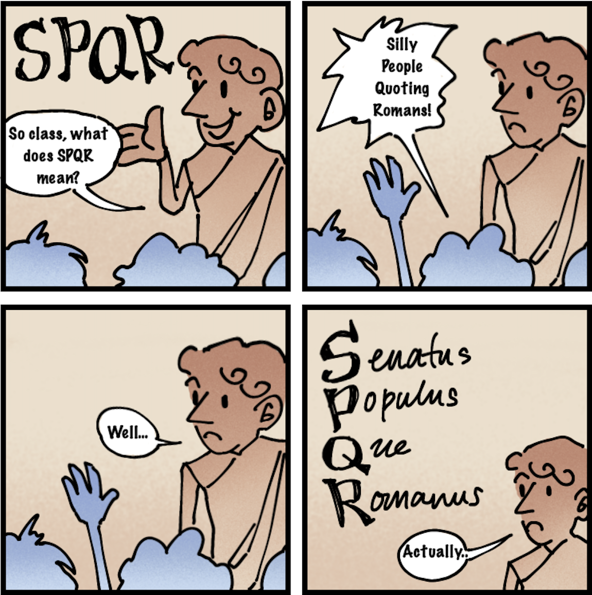
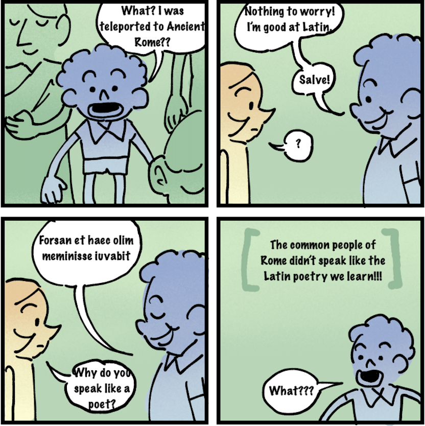

Short Comics
Home
Latin Trivia
Short Comics
Other Projects
Members
December 2024 Publication

By Yoonjin Lee
SPQR is san abbreviation for Senatus populusque Romanus, which means "the senate and people of Rome." It appears often in literature and monuments.
